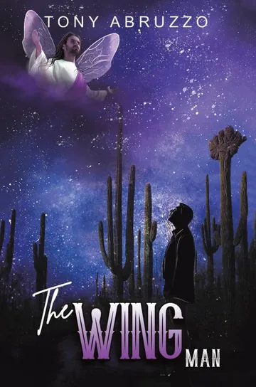

A collection of eleven short stories
Short Stories of Life, Love, Choices and Consequences
A priest torn by his vows. A young woman asked to perform a mercy killing. A veteran with wartime secrets he keeps from his wife. Eleven stories about the choices people make, and the consequences they live with.
About the book
“The knowledge we obtain will enable us to show empathy and kindness, instead of hate and judgement.”
- Format
- Paperback, 224 pages
- Publisher
- Austin Macauley Publishers
- Published
- February 3, 2023
- ISBN
- 979-8886932348
Eleven stories of varying lengths: a priest and his vows, a veteran and his secrets, a family’s grief, a marriage measured against an elderly couple’s devotion.
The book calls them “windows into the minds of others with whom we may have nothing in common.” Some of these people you may never have met. By the last page, you have sat with each of them.
Inside the book
Eleven stories
Some turn on a hard decision. Some sit with the loss of someone loved. Some choose love over hate.
Hard choices
-
The Confession
A priest and his duty to obey his religious vows.
-
Samantha’s World
A young woman living with mental illness is asked to perform a mercy killing.
-
Sergeant Mickey Corcoran
An older man keeps secrets from his wife about his years in World War II.
-
Joy
A married man and his choice to become a woman.
Love
-
Don’t Peek
Watching an elderly couple’s devotion, a husband doubts that he and his wife will ever care for each other the same way.
-
Three stories of choosing love over hate
- A Spirit Named Samuel
- Escape from Hate
- The Elevator
Loss
-
Three stories of losing someone you love
- Maria and Margaret
- The Horn
- Life and Eternity

Also by Tony Abruzzo · A novel
The Wing Man
Ben Russo is a Vietnam veteran and a Tucson attorney. From Vietcong booby traps to murder, trafficking and an unjust prosecution, he survives what should have ended him, because he is never alone.
A guardian angel, a Wing Man only he can sense or see, stays beside him from childhood to his last breath.
See The Wing Man on AmazonEleven stories. One table by the water.
Pull up a chair.
“Abruzzo is a natural storyteller.”